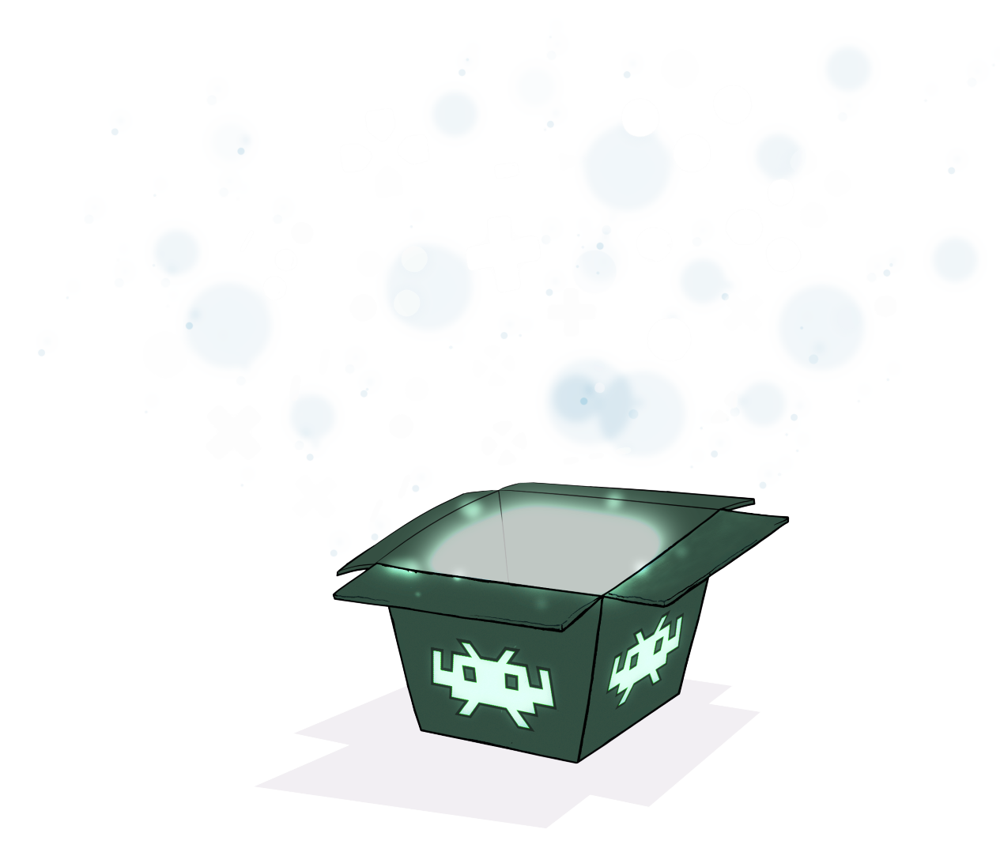

{% extends "main.html" %}

<!-- Render hero under tabs -->
{% block tabs %}
  {{ super() }}

  <!-- Additional styles for landing page -->
  <style>

    .tx-container {
        padding-top: .0rem;
        background: linear-gradient(#58598a, #8a8bad);
    }

    .tx-hero {
        margin: 32px 2.8rem;
        color: var(--md-primary-bg-color);
        justify-content: center;
    }

    .tx-hero h1 {
        margin-bottom: 1rem;
        color: currentColor;
        font-weight: 700
    }

    .tx-hero__content {
        padding-bottom: 1rem;
        margin: 0 auto;
    }

    .tx-hero__image{
        max-width: auto;
        height: auto;
        order:1;
        padding-right: 2.5rem;
    }

    .tx-hero .md-button {
        margin-top: .5rem;
        margin-right: .5rem;
        color: var(--md-primary-bg-color)
    }

    .tx-hero .md-button--primary {
        background-color: var(--md-primary-bg-color);
        color: hsla(280deg, 37%, 48%, 1);
        border-color: var(--md-primary-bg-color)
    }

    .tx-hero .md-button:focus,
    .tx-hero .md-button:hover {
        background-color: var(--md-accent-fg-color);
        color: var(--md-default-bg-color);
        border-color: var(--md-accent-fg-color)
    }
  </style>

  <!-- Hero for landing page -->
  <section class="tx-container">
    <div class="md-grid md-typeset">
      <div class="tx-hero">
        <div class="tx-hero__image">
          
        </div>
        <div class="tx-hero__content">
          <h1> RetroArch </h1>
          <p>RetroArch is a frontend for emulators, game engines and media players.</p>
          <a href="{{ page.next_page.url | url }}" title="{{ page.next_page.title | striptags }}" class="md-button md-button--primary">
            Get started
          </a>
          <a href="https://www.retroarch.com/index.php?page=platforms" class="md-button">
           Download
          </a>
          <a href="https://docs.libretro.com/development/libretro-overview/" class="md-button">
            Developer
          </a>
        </div>
      </div>
    </div>
</section>
{% endblock %}

<!-- Content -->
{% block content %}{% endblock %}

<!-- Application footer -->
{% block footer %}{% endblock %}
